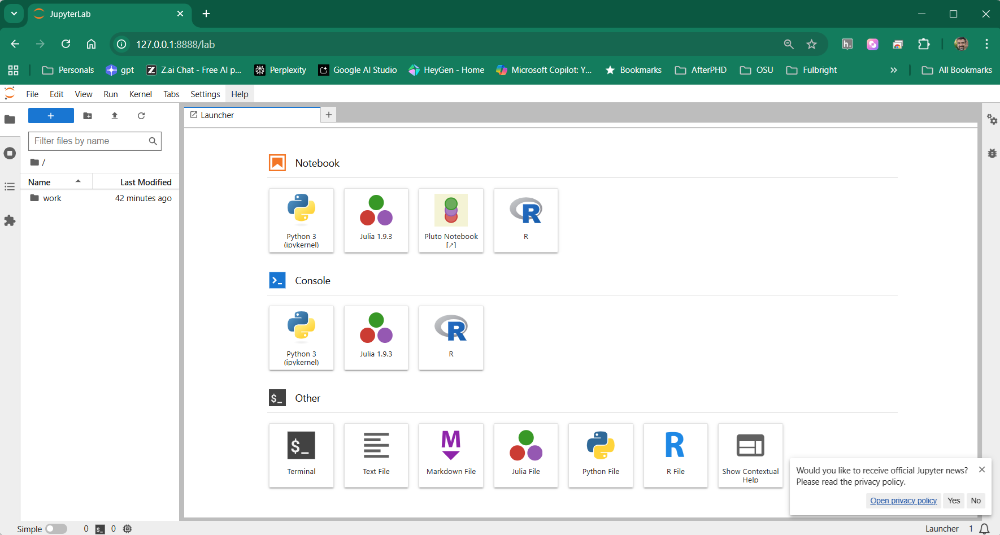

2Guía de Instalación. Opción A: Contenedor Docker (Python, R, Julia)
2.1 Introducción al Entorno de Trabajo
Esta guía establece un entorno de Reproducibilidad Científica. Utilizaremos una arquitectura híbrida: VSCode como editor local (Microsoft Corporation, 2026) y Docker como laboratorio de ejecución (Inc., 2025). Esta aproximación garantiza que todos los estudiantes operen bajo las mismas versiones de motores geoespaciales (GDAL, GEOS, PROJ), eliminando el problema de “en mi computador no funciona”.
Preparación de Herramientas en Windows
Para preparar su equipo de trabajo, instale las siguientes herramientas básicas:
VSCode IDE: Su interfaz principal para editar archivos .qmd y gestionar código (Microsoft Corporation, 2026). En el anexo de referencia técnica encontrará las principales extensiones (Sección E.2) necesarias a instalar en VSCode.
Docker Desktop: Motor de virtualización que ejecutará nuestro laboratorio SIG (Inc., 2025). Durante la instalación, asegúrese de activar la opción “Use WSL 2 instead of Hyper-V”.
Siguiendo los pasos detallados a continuación para instalar dos contenedores Docker, en resumen, ellos contendrán (no es necesario instalarlos manualmente):
Python, R y Julia con los principales paquetes/librerías para geoprocesamiento.
Quarto.
TinyTeX: Motor ligero de LaTeX necesario para compilar reportes profesionales (ej. en Quarto) en formato PDF (Xie, 2019). Si desea instalar TinyTeX para generar PDF por fuera del entorno Docker, desde la terminal de VSCode use el comando (opcional: fuera de clase):
quarto install tinytex
PostgreSQL + PostGIS
Enlaces de Descarga e Instalación
Descargue e instale las versiones oficiales desde los siguientes enlaces:
Instalación: Ejecute el instalador y asegúrese de aceptar la actualización del kernel de WSL 2 si el sistema lo solicita, o previamente usar en el terminal wsl --update.
2.2 Infraestructura a instalar
Para garantizar un entorno de análisis SIG reproducible y políglota, utilizaremos la orquestación de contenedores. Este enfoque permite ejecutar, de forma aislada y coordinada, tanto el motor de procesamiento como el servidor de datos.
El Manifiesto Técnico: Dockerfile y docker-compose.yml
Organización del Proyecto
Para automatizar el despliegue de los dos contenedores del curso (analisis-geo y db-postgis), utilizaremos la orquestación de Docker. Mientras que el entorno de análisis se construye a medida sobre la imagen base ghcr.io/osgeo/gdal:ubuntu-full-latest, el servicio de base de datos utiliza la imagen especializada kartoza/postgis.
Para este proceso, utilizaremos dos archivos clave: docker-compose.yml y Dockerfile.
Cree una carpeta utilizando su ID de usuario de correo institucional como nombre (el identificador que aparece antes del @unal.edu.co). Por ejemplo, si su correo es juperez@unal.edu.co, la carpeta deberá llamarse juperez. En adelante llamaremos a esa carpeta su_carpeta o la carpeta ID UNAL.
Dentro de ella, guarde los archivos que se presentan a continuación.
Archivo docker-compose.yml (Orquestación)
Este archivo es el manifiesto técnico que automatiza la construcción y coordinación de los servicios del curso. Su propósito es definir las reglas de convivencia entre los contenedores, configurando los siguientes pilares:
Imágenes: Versiones exactas de software (GDAL/Ubuntu para análisis y PostGIS para datos).
Puertos: Mapeos específicos para acceder a las herramientas desde Windows sin conflictos (8889 para Jupyter, 8788 para el visor de R y 5434 para la base de datos).
Volúmenes: Garantizan la persistencia de datos, sincronizando su carpeta local en tiempo real con el entorno interno del contenedor.
A continuación, se describen los dos servicios integrados en este manifiesto:
Servicio de Análisis (analisis-geo): Identificado en el archivo como analisis-geo, este servicio se construye a medida (etiqueta build: .) utilizando las instrucciones del Dockerfile. Es el motor políglota encargado de procesar R, Python y Julia sobre una base robusta de GDAL. Incluye una configuración de LD_PRELOAD para la estabilidad de las librerías dinámicas y una integración profunda que permite usar el visor httpgd de R como terminal gráfica unificada para todos los lenguajes. Crea el contenedor contenedor_sig_unal.
Servicio PostGIS (db-postgis): Identificado como db-postgis, este servicio descarga automáticamente la imagen especializada de Kartoza. Levanta el servidor de base de datos sig_db_unal, configurado para recibir conexiones espaciales desde sus scripts o herramientas externas como QGIS o ArcGIS a través del puerto 5434.
services: # ============================================================ # SERVICIO PRINCIPAL # Entorno de análisis geoespacial y científico # Integra R, Python, Julia, GDAL, Quarto y Jupyter # ============================================================analisis-geo:build: .image: image_sig_unal # Nombre de la imagen Docker que se construye localmentecontainer_name: contenedor_sig_unal # Nombre del contenedor (más fácil de usar en docker exec) # Permite sesiones interactivas (terminal, REPLs, etc.)tty:truestdin_open:true # Carpeta compartida: # Todo lo que esté en el proyecto (host) aparece dentro del contenedorvolumes:- .:/home/rstudio/work # ------------------------------------------------------------ # VARIABLES DE ENTORNO # Aseguran que R, Python, Julia y Quarto usen versiones correctas # ------------------------------------------------------------environment:- RETICULATE_PYTHON=/usr/bin/python3 # Python que usará R (reticulate)- QUARTO_PYTHON=/usr/bin/python3 # Python que usará Quarto- JULIA_HOME=/opt/julia/bin # Ruta base de Julia # "Cirugía" necesaria para evitar conflictos entre Julia y GDAL # (muy común en entornos científicos mixtos)- LD_PRELOAD=/usr/lib/x86_64-linux-gnu/libcurl.so.4:/usr/lib/x86_64-linux-gnu/libstdc++.so.6 # Backend gráfico de Julia (evita errores al graficar en contenedores)- GKSwstype=100 # ------------------------------------------------------------ # PUERTOS # izquierda = computador del estudiante (acceso externo con localhost) # derecha = contenedor (acceso interno - EXPOSE) # ------------------------------------------------------------ports: # Jupyter Notebook / JupyterLab # Se accede desde el navegador en: http://localhost:8889-"127.0.0.1:8889:8888" # Visor de gráficos de R (httpgd) # Permite ver gráficos interactivos fuera de RStudio-"127.0.0.1:8788:8787" # Este servicio solo se inicia cuando la base de datos esté listadepends_on:- db-postgis # ============================================================ # SERVICIO DE BASE DE DATOS # PostgreSQL + PostGIS para datos espaciales # ============================================================db-postgis:image: kartoza/postgis:latestcontainer_name: contenedor_postgis_unal # Credenciales y base de datos inicialenvironment:- POSTGRES_USER=profe_unal- POSTGRES_PASS=geomatica2025- POSTGRES_DB=sig_db_unal # Puerto para conectarse desde QGIS, DBeaver, PgAdmin, etc.ports:-"127.0.0.1:5434:5432" # Volumen persistente: # Los datos NO se pierden aunque el contenedor se borrevolumes:- postgis_data_unal:/var/lib/postgresql# ============================================================# VOLUMENES DOCKER# Espacio en disco administrado por Docker# ============================================================volumes:postgis_data_unal:
Archivo Dockerfile (Construcción del Entorno)
Este archivo constituye la receta de construcción del entorno de análisis. Su función es “congelar” un sistema operativo Ubuntu Noble optimizado, garantizando que todos los estudiantes trabajen exactamente con las mismas versiones de librerías, compiladores y paquetes.
Los pilares técnicos de este archivo son:
Imagen Base Profesional: Utiliza la distribución oficial de OSGeo/GDAL, que provee el stack más estable de librerías geoespaciales (PROJ, GEOS, GDAL) a nivel de sistema.
Pila Políglota Integrada: Automatiza la instalación y configuración de R, Python 3 y Julia 1.10.4, resolviendo dependencias cruzadas que suelen ser difíciles de configurar manualmente.
Motor de Reportes Científicos: Instala Quarto y TinyTeX, permitiendo la generación automática de informes en PDF y HTML con calidad editorial.
Puente de Comunicación Maestro: Configura el archivo Rprofile.site, el cual actúa como el “cerebro” que permite a R ejecutar código de Julia y capturar gráficos de Python de forma transparente.
# ============================================================# Imagen base# ------------------------------------------------------------# Imagen oficial de OSGeo con GDAL completo, PROJ, GEOS y soporte# raster/vector profesional. Base estándar en SIG reproducible.# ============================================================FROM ghcr.io/osgeo/gdal:ubuntu-full-latest# ============================================================# 1. Base, Locales y Pandoc# ------------------------------------------------------------# Configuración UTF-8 para evitar problemas con acentos,# R, Python, Julia, LaTeX y generación de documentos.# ============================================================ENV LANG=en_US.UTF-8ENV LC_ALL=en_US.UTF-8# Herramientas base del sistema:# - compiladores y toolchain (C/C++)# - git / curl / wget para descargas# - pandoc como motor universal de documentosRUNapt-get update &&apt-get install -y locales git curl wget ca-certificates \ build-essential cmake libtool automake pkg-config software-properties-common \ pandoc &&\locale-gen en_US.UTF-8# ============================================================# Librerías criptográficas y de red# ------------------------------------------------------------# Necesarias para:# - conexiones HTTPS# - Julia# - GDAL# - acceso a APIs externas# ============================================================RUNapt-get update &&apt-get install -y--no-install-recommends\ libmbedtls-dev \ libnng-dev \ libssl-dev \ libxml2-dev \ libcurl4-openssl-dev \ git \ cmake# ============================================================# 2. R, Python y dependencias de sistema# ------------------------------------------------------------# Incluye soporte para:# - SIG (GDAL / GEOS / PROJ)# - NetCDF / HDF5# - NASA / Copernicus# - WhiteboxTools# ============================================================RUNapt-get update &&apt-get install -y--no-install-recommends\ r-base r-base-dev python3-pip python3-dev \ psmisc lsof net-tools ffmpeg \ libpng-dev libcairo2-dev libsystemd-dev \ libfontconfig1-dev libfreetype6-dev \ libharfbuzz-dev libfribidi-dev \ libcurl4-openssl-dev libsqlite3-dev libxml2-dev libssl-dev \ libgeos-dev libproj-dev libgdal-dev libudunits2-dev \ libgit2-dev libssh2-1-dev libxt-dev libglpk-dev libmount-dev \ libmagick++-dev libpcre2-dev libnetcdf-dev libhdf5-dev \ libxt6 libxrender1 libxext6 default-jdk \# Elimina la restricción de pip en Debian/Ubuntu modernos && rm /usr/lib/python3.12/EXTERNALLY-MANAGED || true && \ rm -rf /var/lib/apt/lists/*# ============================================================# 3. Quarto CLI y TinyTeX# ------------------------------------------------------------# Quarto: documentos reproducibles (HTML, PDF, slides)# TinyTeX: LaTeX liviano para generación de PDF# ============================================================RUNcurl-LO https://github.com/quarto-dev/quarto-cli/releases/download/v1.4.550/quarto-1.4.550-linux-amd64.deb \&&dpkg-i quarto-1.4.550-linux-amd64.deb &&rm quarto-1.4.550-linux-amd64.deb \&&quarto install tinytex --no-prompt# ============================================================# 4. Python Stack# ------------------------------------------------------------# Librerías SIG, ciencia de datos, notebooks y visualización# ============================================================RUNpip3 install --upgrade--ignore-installed--break-system-packages\# Ya estaban: shapely matplotlib numpy geopandas fiona pyyaml nbformat nbclient ipykernel \# Nuevos agregados: pandas rasterio rasterstats scipy psycopg2 pysal earthaccess cdsapi leafmap \ geemap segment-geospatial geoai-py lidar pygis whitebox whiteboxgui streamlit \ ghp-import jupyter-book jupyterlab jupytext mystmd notebook# ============================================================# 5. R Stack# ------------------------------------------------------------# Instalación desde CRAN optimizado de Posit para Linux# Incluye SIG, visualización, modelado y ML espacial# ============================================================RUNR-e"options(timeout = 1000, Ncpus = parallel::detectCores(), repos = c(CRAN = 'https://packagemanager.posit.co/cran/__linux__/noble/latest')); \ install.packages(c('ggplot2', 'patchwork', 'dplyr', 'remotes', 'languageserver', \ 'rmarkdown', 'units', 's2', 'sf', 'terra', 'stars', 'reticulate', 'IRkernel', \ 'unigd', 'cpp11', 'systemfonts', 'AsioHeaders', 'png', 'grid', 'JuliaCall', 'JuliaConnectoR', \ # Nuevos CRAN: 'tidyverse', 'tmap', 'leaflet', 'googleway', 'ggspatial', 'mapview', 'plotly', \ 'rasterVis', 'cartogram', 'geogrid', 'geofacet', 'linemap', 'tanaka', 'rayshader', \ 'lwgeom', 'gstat', 'spdep', 'spatialreg', 'stplanr', 'sfnetworks', 'spatstat', \ 'stpp', 'magrittr', 'giscoR', 'caret', 'tidymodels', 'spatialsample', 'CAST', \ 'mlr3spatial', 'mlr3spatiotempcv', 'ncdf4', 'whitebox'))"# ============================================================# Starsdata y repositorios específicos# ------------------------------------------------------------# Se compila desde código fuente y se usan repos especiales# ============================================================RUNR-e"options(timeout = 30000, Ncpus = parallel::detectCores()); \ install.packages('starsdata', repos='https://cran.uni-muenster.de/pebesma/', type='source')"&&\R-e"options(timeout = 2000, Ncpus = parallel::detectCores()); \ install.packages(c('mlr3cmprsk', 'survdistr'), repos=c('https://mlr3learners.r-universe.dev', 'https://cloud.r-project.org')); \ install.packages('geocompkg', repos=c('https://geocompr.r-universe.dev', 'https://cloud.r-project.org'), dependencies=TRUE); \ whitebox::install_whitebox(); IRkernel::installspec(user = FALSE)"# ============================================================# httpgd estable# ------------------------------------------------------------# Dispositivo gráfico moderno para R (gráficos en navegador)# ============================================================RUNwget https://cran.r-project.org/src/contrib/Archive/httpgd/httpgd_2.0.3.tar.gz &&\R CMD INSTALL httpgd_2.0.3.tar.gz &&rm httpgd_2.0.3.tar.gz# ============================================================# 6. Puente Python ↔ R (Backend de Matplotlib para reticulate)# ------------------------------------------------------------# Permite que gráficos de matplotlib generados desde Python# puedan ser capturados y mostrados correctamente desde R# usando reticulate (especialmente en notebooks y httpgd).# ============================================================# Creamos la estructura esperada por reticulateRUNmkdir-p /usr/local/lib/python3.12/dist-packages/reticulate/matplotlib &&\touch /usr/local/lib/python3.12/dist-packages/reticulate/__init__.py# Definimos una función que R puede interceptar# para recibir el path de la imagen generada por PythonRUNprintf'def r_graphic_command(path):\n import os\n if os.path.exists(path): print(f"r_graphic_command: {path}")\n'> /usr/local/lib/python3.12/dist-packages/reticulate/__init__.py# Backend custom de matplotlib:# - Renderiza con Agg# - Guarda el gráfico como PNG temporal# - Notifica a R para que lo muestreRUNprintf'import matplotlib\nfrom matplotlib.backends.backend_agg import FigureCanvasAgg\nfrom matplotlib.backend_bases import FigureManagerBase\n\ndef show(*args, **kwargs):\n import os, tempfile, reticulate\n fd, path = tempfile.mkstemp(suffix=".png")\n os.close(fd)\n matplotlib.pyplot.savefig(path)\n if hasattr(reticulate, "r_graphic_command"):\n reticulate.r_graphic_command(path)\n\nclass FigureManager(FigureManagerBase):\n def show(self):\n show()\n\ndef new_figure_manager(num, *args, **kwargs):\n FigureClass = kwargs.pop("FigureClass", matplotlib.figure.Figure)\n thisFig = FigureClass(*args, **kwargs)\n return new_figure_manager_given_figure(num, thisFig)\n\ndef new_figure_manager_given_figure(num, figure):\n canvas = FigureCanvasAgg(figure)\n manager = FigureManager(canvas, num)\n return manager\n\nFigureCanvas = FigureCanvasAgg\n'> /usr/local/lib/python3.12/dist-packages/reticulate/matplotlib/backend.py# ============================================================# 7. Julia: Instalación y Wrapper de Seguridad# ------------------------------------------------------------# Se instala Julia binaria oficial y se fuerza el uso de# librerías del sistema para evitar conflictos con GDAL/OpenSSL# ============================================================# Versión fija de Julia (reproducibilidad total)ENV JULIA_VERSION=1.10.4# Descarga e instalación manual de JuliaRUNwget https://julialang-s3.julialang.org/bin/linux/x64/1.10/julia-${JULIA_VERSION}-linux-x86_64.tar.gz \&&tar-xvzf julia-${JULIA_VERSION}-linux-x86_64.tar.gz &&mv julia-1.10.4 /opt/julia# Wrapper de Julia:# - Fuerza LD_PRELOAD# - Evita conflictos de libcurl / libstdc++# - Garantiza compatibilidad con GDALRUNprintf'#!/bin/bash\nexport LD_PRELOAD=/usr/lib/x86_64-linux-gnu/libcurl.so.4:/usr/lib/x86_64-linux-gnu/libstdc++.so.6\nexport JULIA_PKG_USE_CLI_GIT=true\n/opt/julia/bin/julia "$@"\n'> /usr/local/bin/julia &&chmod +x /usr/local/bin/julia# ============================================================# 8. Julia: Configuración de librerías nativas# ------------------------------------------------------------# Se fijan explícitamente las rutas del sistema para:# - GDAL# - GEOS# evitando que Julia use binarios incompatibles# ============================================================RUNmkdir-p /root/.julia/environments/v1.10 &&\printf"[LocalPreferences]\nGDAL_jll = { libgdal_path = \"/usr/lib/libgdal.so\" }\nGEOS_jll = { libgeos_path = \"/usr/lib/x86_64-linux-gnu/libgeos_c.so\" }\n"> /root/.julia/environments/v1.10/LocalPreferences.toml# ============================================================# 9. Julia: Instalación de paquetes# ------------------------------------------------------------# Stack SIG completo:# - Rasters, ArchGDAL, GeoStats, Makie# - Conectores DB, CSV, NetCDF# - Visualización y notebooks (IJulia)# ============================================================RUNjulia-e'using Pkg; Pkg.add(["Preferences", "Suppressor", "RCall", "LibGEOS", "Tables", "DataFrames", "Plots", \ "Statistics", "ArchGDAL", "LibPQ", "GeoDataFrames", "IJulia", "CSV", "CairoMakie", "AlgebraOfGraphics", \ "DimensionalData", "FlexiJoins", "GeoFormatTypes", "GeoInterface", "GeoJSON", "GeoMakie", "GeometryOps", \ "Makie", "MakieCore", "NaturalEarth", "Proj", "Rasters", "StatsBase", "Tyler", "GeoStats", "Graphs", \ "NCDatasets", "MetaGraphsNext"])'# ============================================================# Cirugía de librerías (OpenSSL)# ------------------------------------------------------------# Fuerza a Julia a usar OpenSSL del sistema (Ubuntu Noble)# Evita errores de TLS y descargas de paquetes# ============================================================RUNfind /root/.julia/artifacts -name"libssl.so*"-exec ln -sf /usr/lib/x86_64-linux-gnu/libssl.so.3 {} \;&&\find /root/.julia/artifacts -name"libcrypto.so*"-exec ln -sf /usr/lib/x86_64-linux-gnu/libcrypto.so.3 {} \;# ============================================================# Precompilación total de Julia# ------------------------------------------------------------# Garantiza arranque instantáneo en:# - VSCode# - Jupyter# - IJulia# ============================================================RUNjulia-e'using Pkg; Pkg.precompile()'# ============================================================# Configuración de paralelismo# ------------------------------------------------------------# Julia usará automáticamente todos los núcleos disponibles# ============================================================ENV JULIA_NUM_THREADS=auto# ============================================================# 10. CONFIGURACIÓN MAESTRA Rprofile.site# ------------------------------------------------------------# Este archivo se ejecuta automáticamente cada vez que inicia R.# Centraliza la integración R ↔ Julia ↔ Python ↔ VSCode.## Build 47.42:# - Control de DPI, tamaño y fuentes# - Ejecución segura de Julia desde R# - Renderizado consistente de gráficos# - Hook para Matplotlib vía reticulate# ============================================================RUNcat<< 'EOF'> /usr/lib/R/etc/Rprofile.site# ============================================================# --- 1. AJUSTES DE SISTEMA ---# ------------------------------------------------------------# Variables globales para que R sepa dónde encontrar:# - Julia# - Python usado por Quarto# ============================================================Sys.setenv(JULIA_BINDIR = "/opt/julia/bin")Sys.setenv(QUARTO_PYTHON = "/usr/bin/python3")# ============================================================# Código Julia embebido (auto-sanable)# ------------------------------------------------------------# Se define como string para:# - Inyectarse dinámicamente en Julia# - Evitar errores si el kernel se reinicia# - Garantizar reproducibilidad en notebooks# ============================================================.unal_julia_code <- 'using Suppressor, Plots, Statistics# Ejecutor central de código Julia desde R# - Evalúa múltiples expresiones# - Captura stdout# - Maneja gráficos y textofunction _unal_core_executor(code, is_plot, filename, dpi, w, h, fs) @capture_out begin if is_plot # Parámetros gráficos homogéneos (DPI, tamaño, fuentes) default(dpi=dpi, size=(w, h), titlefontsize=fs+2, guidefontsize=fs, tickfontsize=fs-2, legendfontsize=fs-1) end pos = 1 while pos <= lastindex(code) start_idx = pos try ex, pos = Meta.parse(code, pos) cmd_part = strip(code[start_idx:prevind(code, pos)]) if !isempty(cmd_part) println("julia> ", cmd_part) res = eval(ex) if res !== nothing && !(res isa Plots.Plot) show(stdout, MIME("text/plain"), res) println() end println() end catch e println("julia> Error: ", e) break end end # Guardado del gráfico si aplica if is_plot && current() !== nothing; savefig(current(), filename); end endend'# ============================================================# Inicialización segura de Julia# ------------------------------------------------------------# - Verifica que JuliaConnectoR esté disponible# - Inyecta el ejecutor solo una vez por sesión# ============================================================.ensure_julia_ready <- function() { if (!requireNamespace("JuliaConnectoR", quietly = TRUE)) stop("JuliaConnectoR missing") if (!JuliaConnectoR::juliaEval('isdefined(Main, :_unal_core_executor)')) { JuliaConnectoR::juliaEval(.unal_julia_code) }}# ============================================================# j_eval(): ejecutar código Julia (solo texto)# ------------------------------------------------------------# Uso típico:# j_eval("1 + 1")# ============================================================j_eval <- function(cmd) { .ensure_julia_ready() cat(JuliaConnectoR::juliaCall("_unal_core_executor", cmd, FALSE, "", 72, 800, 500, 12))}# ============================================================# j_plot(): ejecutar código Julia con gráficos# ------------------------------------------------------------# - Guarda el gráfico en PNG# - Lo renderiza directamente en R# ============================================================j_plot <- function(cmd, n = "tmp_plot.png", dpi = 300, w = 800, h = NULL, ratio = 1.6, fontsize = 12) { .ensure_julia_ready() if (is.null(h)) h <- round(w / ratio) log_out <- JuliaConnectoR::juliaCall("_unal_core_executor", cmd, TRUE, n, dpi, as.integer(w), as.integer(h), as.integer(fontsize)) if (nchar(log_out) > 0) cat(log_out) if (file.exists(n)) { img <- png::readPNG(n) grid::grid.newpage() grid::grid.raster(img) }}# ============================================================# --- 2. CARGA DE LIBRERÍAS Y DISPOSITIVOS ---# ------------------------------------------------------------# Librerías base para renderizar imágenes# ============================================================library(png)library(grid)if (interactive()) { # ========================================================== # Visor gráfico httpgd (VSCode / navegador) # ---------------------------------------------------------- # Permite gráficos interactivos persistentes # ========================================================== if (requireNamespace("httpgd", quietly = TRUE)) { options(device = "httpgd", httpgd.host = "0.0.0.0", httpgd.port = 8787, httpgd.token = FALSE) } # ========================================================== # Hook Python → R (Matplotlib) # ---------------------------------------------------------- # Captura gráficos de matplotlib y los muestra en R # usando el backend custom definido en Docker # ========================================================== setHook(packageEvent("reticulate", "onLoad"), function(...) { try({ ret_py <- reticulate::import("reticulate", delay_load = TRUE) reticulate::py_set_attr(ret_py, "r_graphic_command", function(path) { if (file.exists(path)) { img <- png::readPNG(path) grid::grid.newpage() grid::grid.raster(img) } }) reticulate::py_run_string("import matplotlib; matplotlib.use('module://reticulate.matplotlib.backend')") }, silent = TRUE) })}EOF# ============================================================# Compatibilidad multi-R (opcional)# ------------------------------------------------------------# Permite que R instalado en rutas alternativas use# exactamente la misma configuración# ============================================================#RUN cp /usr/lib/R/etc/Rprofile.site /etc/R/Rprofile.site# ============================================================# 10. Finalización del contenedor# ------------------------------------------------------------# Directorio de trabajo compartido# Permisos amplios para docencia# ============================================================WORKDIR /home/rstudio/workRUNchmod-R 777 /home/rstudio/work# Puertos:# 8888 → JupyterLab# 8787 → httpgd / RStudio-like viewerEXPOSE 8888EXPOSE 8787# Arranque por defecto: JupyterLabCMD ["jupyter", "lab", "--ip=0.0.0.0", "--port=8888", "--no-browser", "--allow-root", "--NotebookApp.token='geomatica2025'"]
Stack de Python
Para el análisis geoespacial avanzado, es necesario instalar un conjunto de librerías especializadas. El núcleo de este entorno es geopandas, cuya instalación gestiona automáticamente dependencias críticas como numpy (cálculo numérico), pandas (manipulación de datos) y shapely (operaciones geométricas). Complementariamente, instalaremos rasterio para la gestión profesional de datos ráster y rasterstats para la extracción de estadísticas zonales.
Como veremos, estos paquetes dependen unos de otros. Las dependencias principales se muestran en la Figura 2.1:
Figura 2.1: Principales dependencias entre los paquetes de Python que vamos a estudiar. Adaptado de Dorman (2025).
geopandas: Capa superior que integra a pandas, shapely, fiona y pyproj. Permite realizar consultas espaciales complejas y gestionar GeoDataFrames con una sintaxis simplificada.
rasterio: Basada en la librería GDAL, es el estándar para la lectura, escritura y manipulación de formatos ráster (como GeoTIFF), permitiendo gestionar metadatos y arreglos de píxeles con alta eficiencia.
scipy: Proporciona algoritmos avanzados de optimización, álgebra lineal y estadística necesarios para procesos de interpolación y análisis de superficies.
rasterstats: Herramienta específica para extraer estadísticas (medias, sumas) a partir de capas ráster basadas en geometrías vectoriales.
shapely: Motor geométrico basado en el estándar Simple Features y puente hacia la librería GEOS. Se encarga de la lógica matemática de las geometrías (áreas, intersecciones, buffers y validación topográfica).
pyproj: Interfaz para la librería PROJ. Gestiona proyecciones cartográficas, sistemas de referencia (CRS) y transformaciones de datums.
fiona / pyogrio: Motores de acceso a datos vectoriales (SHP, GPKG) que actúan como interfaces hacia la librería GDAL/OGR.
xyzservices: Repositorio de metadatos para conectar con servicios de mapas base dinámicos (como OpenStreetMap).
La siguiente tabla vincula las librerías de Python con los motores de cálculo de bajo nivel (C/C++) integrados en el contenedor Docker:
Librería Python
Motor de Sistema (C/C++)
Función Principal en Geomática
pyproj
PROJ
Gestión de Proyecciones y Sistemas de Referencia (CRS).
Para el análisis geoespacial en R, utilizaremos un ecosistema robusto basado en el estándar Simple Features y motores de alto rendimiento para datos ráster (rejilla - cuadrículas).
Tabla 2.2: Paquetes principales del stack espacial en R
sf (Simple Features): Es el estándar moderno para el manejo de datos vectoriales. Representa las geometrías como una columna especial en un data frame, permitiendo aplicar toda la potencia de manipulación de tablas a objetos espaciales.
terra: Motor de alta eficiencia que reemplaza al antiguo paquete raster. Está optimizado para el manejo de grandes volúmenes de datos mediante objetos SpatRaster y SpatVector, permitiendo operaciones de álgebra de mapas y análisis local de manera veloz.
stars (Spatiotemporal Arrays): Especializada en el manejo de “cubos de datos” (rejillas con dimensiones de espacio, tiempo y múltiples atributos). Es la herramienta ideal para procesar series temporales de imágenes satelitales o modelos climáticos multidimensionales.
tidyterra: Extiende la gramática de ggplot2 y tidyverse hacia los objetos de terra. Permite visualizar mapas ráster de forma elegante y realizar tuberías (pipes) de datos manteniendo la integridad espacial.
Stack de Julia
Julia ofrece un rendimiento de nivel C++ con sintaxis simplificada. Debido a que utilizaremos librerías espaciales modernas instaladas vía Mamba, debemos sincronizar el entorno para que el Kernel de Jupyter pueda localizar los controladores actualizados sin colapsar.
Tabla 2.3: Paquetes principales del stack en Julia
LibPQ.jl: Conector de bajo nivel para PostgreSQL. Es la herramienta que permitirá a los estudiantes realizar ingesta y consulta de datos desde el servidor PostGIS.
ArchGDAL.jl: Proporciona una abstracción de alto nivel para el motor GDAL. Es excelente para transformar formatos y manejar proyecciones.
LibGEOS.jl: La interfaz directa al motor de geometrías (GEOS). Se utiliza para operaciones topológicas puras como validación de polígonos, intersecciones y cálculos de buffers.
DataFrames.jl: El estándar para el manejo de datos tabulares en Julia, permitiendo integrar los resultados de las consultas espaciales en estructuras fáciles de analizar.
2.3 Puesta en Marcha y Acceso al Contenedor (Terminal, VSCode, JupyterLab)
Siga este procedimiento para iniciar su laboratorio por primera vez:
Iniciar Docker Desktop: Asegúrese de que el icono de la ballena está en la barra de tareas.
Configuración de Almacenamiento: Debido a que la imagen políglota y la base de datos requieren un espacio considerable, asegúrese de que el disco de destino tenga al menos 30 GB de espacio libre.
Procedimiento para cambiar la ubicación de las imágenes (archivos con extensión .vhdx): Si su disco principal (C:) está sin espacio, mueva Docker a otro disco:
Diríjase a Settings (engranaje) -> Resources -> Advanced.
Localice Disk image location.
Haga clic en Browse y seleccione una carpeta en un disco con mayor capacidad.
Haga clic en Apply & restart.
Optimización de Memoria Swap {#swap-ref}: Para procesar datos raster de gran tamaño sin interrupciones en R o Julia, es fundamental ampliar el archivo de intercambio (Swap). Puede consultar más detalles en la Sección 2.7 sobre cómo esto impacta el rendimiento.
Procedimiento para aumentar Swap en Windows (Host): Ajuste la memoria virtual del sistema operativo para evitar cierres por falta de RAM:
En el buscador de Windows, escriba y seleccione “Ver la configuración avanzada del sistema”.
En la pestaña Opciones avanzadas, sección Rendimiento, haga clic en el botón Configuración.
Diríjase a Opciones avanzadas -> Memoria Virtual y haga clic en Cambiar.
Desmarque “Administrar automáticamente”, seleccione el disco principal, elija Tamaño personalizado y asigne estos valores sugeridos, que dependen del espacio disponible en el disco (verifíquelo): Inicial 16384 MB / Máximo 32768 MB.
Haga clic en Establecer y luego en Aceptar (requerirá reiniciar el equipo).
Configuración de Swap en el Contenedor (WSL2): Dado que Docker opera sobre el subsistema Linux, debe configurar el archivo de intercambio global de WSL2:
Abra el explorador de archivos y diríjase a su carpeta de usuario (escriba %USERPROFILE% en la barra de direcciones).
Cree un archivo nuevo llamado .wslconfig (asegúrese de que no tenga extensión .txt al final).
Pegue el siguiente contenido para definir la RAM y asegurar 32 GB de swap para sus procesos espaciales (sugerido, depende de su espacio en disco):
[wsl2]memory=12GB # RAM máxima física asignada a Linuxswap=32GB # Memoria de intercambio para evitar el cierre de contenedores
Importante
Si desea verificar si estos cambios surtieron efecto dentro de su laboratorio, puede ejecutar el comando free -h en la terminal de Jupyter o VSCode. Esto le mostrará la memoria total y el espacio de Swap disponible tal como se configuró en el Anexo de Referencia Técnica.
Organización de Archivos: Copie los archivos docker-compose.yml y Dockerfile dentro de su carpeta de trabajo (nombrada con su ID de correo UNAL).
Configuración de Terminal: Abra PowerShell y ejecute el siguiente comando para visualizar correctamente caracteres especiales y logs:
# Forzar UTF8 en el PowerShell[Console]::OutputEncoding =[System.Text.Encoding]::UTF8
Construcción del Entorno (Build): Este comando se ejecuta solo la primera vez. Desde la terminal, ubicado en su carpeta de ID (su_carpeta), ejecute:
Arrancar Contenedores: El comando build una vez se termina satisfactoriamente, no necesita volver a ejecutarse. El principal comando para subir el servicio de las imágenes instaladas se muestra a continuación. Use este comando siempre antes de iniciar a trabajar con los contenedores instalados:
docker compose up -d
Verificación de Logs: Si desea ver el progreso o verificar errores, revise el archivo .log generado o ejecute el siguiente comando, sin embargo la url de acceso a JupyterLab mostrada después de ejecutar este comando puede estar errónea. Para acceder a JupyterLab vea la siguiente instrucción (Ingreso a JupyterLab)
docker logs contenedor_sig_unal
Ingreso a JupyterLab: Una vez el contenedor esté corriendo, abra su navegador y pegue la siguiente URL (note que usamos el puerto 8889 definido en nuestro manifiesto):
http://127.0.0.1:8889/lab?token=geomatica2025
Localización de Archivos y Persistencia: En el contenedor, su carpeta de Windows se encuentra vinculada a la ruta /home/rstudio/work.
Cualquier archivo guardado en esa ruta dentro de Jupyter aparecerá en su carpeta de Windows.
Se recomienda organizar su trabajo en las subcarpetas: notebooks, scripts, y data.
La carpeta imagenes (sin tílde y provista para las guías Quarto) debe residir también en esta ruta para un renderizado correcto.
Acceso y Configuración en VSCode:
Para una experiencia de desarrollo profesional, conecte VSCode directamente al contenedor:
Ejecute Ctrl + Shift + P y seleccione Dev Containers: Attach to Running Container….
Seleccione el contenedor contenedor_sig_unal.
Extensiones: Una vez conectado “dentro” del contenedor, debe habilitar/instalar las extensiones (‘Install in Container’) de R (REditorSupport), R Debugger, R Extension Pack (Yuki Ueda), Julia, Python, Quarto, PostgreSQL (Chris Kolman), psql (doublefint), GitHub Repositories, Container Tools, Python (Microsoft), Jupyter (Microsoft). Para un listado completo ver Sección E.2.
Inicialización del Visor Gráfico (Solo la primera vez por sesión)
Para que los gráficos de R (y los puentes de Python/Julia) se visualicen correctamente en VSCode, debe inicializar el dispositivo gráfico. En su terminal de R, ejecute:
# Lanza el servidor de gráficos httpgdhttpgd::hgd()
Acceso al Visor: VSCode debería abrir automáticamente una pestaña con el visor. Si esto no sucede o prefiere usar su navegador externo (Chrome/Edge), acceda a la dirección: http://127.0.0.1:8788.
Nota sobre Puertos: Aunque el comando en R pueda imprimir una URL interna con el puerto 8787 o un token aleatorio, ignore esa dirección. Gracias a nuestro archivo docker-compose.yml, el puerto 8788 de su Windows está “cableado” permanentemente al visor, eliminando la necesidad de buscar tokens o puertos dinámicos.
Apagar los servicios:
docker compose down
Resumen de la infraestructura instalada
Componente
Versión / Estado
Detalles Técnicos
R Engine
4.3.3 (Angel Food Cake)
Puente JuliaConnectoR y visor httpgd configurados.
Julia Stack
v1.10.x
ArchGDAL 3.12.1 operativo mediante enlaces simbólicos.
Python Stack
3.12.x
GeoPandas, PyTorch y drivers psycopg2 listos.
Base de Datos
PostGIS (Noble)
Host interno db-postgis con extensión espacial activa.
Visualización
Dual Mode
Puertos 8788 (R/Julia Plots) y 8889 (Jupyter Lab).
Persistencia
Volúmenes Docker
Mapeo bidireccional en /home/rstudio/work confirmado.
Cirugía SSL
✅ Aplicada
Compatibilidad OpenSSL 3.0 (Sistema) vs 3.3 (Julia).
2.4 Mapeo de Capacidades SIG
Es vital entender que, aunque usemos lenguajes distintos, todos “beben” de las mismas librerías de bajo nivel instaladas en nuestra imagen base de OSGeo:
Operación
R (sf / terra)
Python (GeoPandas)
Julia (ArchGDAL)
Motor de Sistema
Lectura de Datos
st_read() / rast()
read_file() / open()
ArchGDAL.read()
GDAL
Buffers / Geometría
st_buffer()
.buffer()
LibGEOS.buffer()
GEOS
Reproyección
st_transform()
.to_crs()
ArchGDAL.reproject()
PROJ
2.5 Guía Visual de JupyterLab
Al ingresar, se encontrará con el centro de mando de sus kernels, donde podrá elegir entre R, Python o Julia para sus Notebooks:

Figura 2.2: Interfaz de JupyterLab configurada para el laboratorio.
La Carpeta ‘work’ y el Espejo de Datos
En el panel izquierdo de la Figura 2.2, la carpeta /home/rstudio/work/ es el espejo de su directorio local en Windows. Gracias a la configuración de volúmenes en el archivo docker-compose.yml, existe un puente directo: todo cambio realizado en Jupyter se refleja en su disco duro y viceversa, garantizando que su trabajo no se pierda al apagar el contenedor.
2.6 Compilación de la guía completa o documentos individuales
La guía del curso está organizada a partir de un archivo orquestador_quarto.yml, el cual contiene una referencia explícita a cada uno de los archivos Quarto (.qmd) que definen los capítulos, las presentaciones, los talleres y los anexos. Este archivo centraliza la organización y el formato de la guía tanto en PDF como en HTML.
Compilación del proyecto completo
Si desea compilar la guía completa del curso y generar todos los formatos, simplemente ejecute el comando quarto render en la carpeta raíz (donde se encuentra el archivo _quarto.yml):
# Desde la carpeta raíz donde reside el archivo '_quarto.yml'quarto render
Compilación de archivos individuales
En ocasiones, querrá trabajar en un solo capítulo sin procesar el libro entero. Para compilar un archivo específico (ej. archivo.qmd) de manera independiente y evitar que Quarto aplique las reglas de numeración y referencias del proyecto global, siga estos pasos:
Renombrar temporalmente el orquestador: Cambie el nombre de _quarto.yml a _quarto.yml.back. Esto hace que Quarto trate al archivo como un documento “solitario”.
Ejecutar el renderizado específico:
Generar todos los formatos (HTML y PDF):
quarto render archivo.qmd --to all
Generar solo formato HTML:
quarto render archivo.qmd --to html
Generar solo formato PDF:
quarto render archivo.qmd --to pdf
Notas de estudio y personalización
¡Personaliza tu aprendizaje!
En Quarto, puedes agregar tus propias notas de estudio usando la sintaxis de “callouts”. Recuerda que este documento está en proceso de construcción y sufrirá cambios permanentes hasta terminar el curso.
Puedes buscar ayuda en Internet para personalizar la apariencia de tus notas. La sintaxis básica es:
::: {.callout-tip icon="true"}### ¡Escribe tu nota aquí!Este es un espacio para tus observaciones personales y recordatorios.:::
2.7 Mantenimiento y Limpieza del Entorno
El entorno políglota de este curso es robusto y, por lo tanto, pesado. Tras realizar actualizaciones o varias pruebas de construcción, es posible que el espacio en disco se agote rápidamente.
Comandos de Rescate de Espacio
Si recibe errores de “Disk Full” o desea limpiar su sistema, ejecute los siguientes comandos en su terminal de Windows (PowerShell):
# 1. Eliminar contenedores detenidos y redes en desusodocker system prune -f# 2. Limpiar caché de construcción (libera mucho espacio tras errores de build)docker builder prune -f# 3. (Uso extremo) Eliminar TODAS las imágenes que no estén siendo usadas# docker image prune -a -f
Seguridad de sus Datos
No tema realizar limpiezas periódicas. Gracias a la configuración de volúmenes en nuestro archivo docker-compose.yml, todo su código, scripts y datos espaciales están físicamente en su disco local (en la carpeta de su ID UNAL).
Al apagar o borrar el contenedor, lo que está dentro de /home/rstudio/work/siempre estará a salvo en su carpeta de Windows. El contenedor es solo el “motor”, sus archivos son el “combustible” que usted posee.
2.8 Verificación de Conectividad Multilenguaje
Nota técnica: Dentro de la red de Docker, el host es db-postgis.
import psycopg2import geopandas as gpdimport fionaimport matplotlib.pyplot as pltfrom shapely.geometry import Pointprint("--- Inicio de Verificación de Python SIG ---")
--- Inicio de Verificación de Python SIG ---
# 1. Prueba de conexión a la base de datos PostGIStry: conn = psycopg2.connect( host="db-postgis", dbname="sig_db_unal", user="profe_unal", password="geomatica2025" )print("✅ Conexión a PostGIS: Exitosa") conn.close()exceptExceptionas e:print(f"❌ Error de conexión a PostGIS: {e}")
✅ Conexión a PostGIS: Exitosa
# 2. Prueba de Fiona y drivers GDALtry: drivers =len(fiona.supported_drivers)print(f"✅ Fiona operativo: {drivers} drivers GDAL detectados")exceptExceptionas e:print(f"❌ Error en Fiona/GDAL: {e}")
✅ Fiona operativo: 17 drivers GDAL detectados
# 3. Prueba de GeoPandas, Motores GEOS y Visualizacióntry:# Creamos un punto y su buffer (GEOS) punto = Point(0, 0) buffer_geom = punto.buffer(1.0)# Creamos GeoDataFrames para graficar gdf_buffer = gpd.GeoDataFrame({'geometry': [buffer_geom]}, crs="EPSG:4326") gdf_punto = gpd.GeoDataFrame({'geometry': [punto]}, crs="EPSG:4326")print(f"✅ GeoPandas {gpd.__version__}: Operativo")print(f"✅ Motores GEOS/Shapely: Verificados")# Generación del Plot Espacial con Ejes y Cuadrícula fig, ax = plt.subplots(figsize=(6, 6))# Graficamos el buffer gdf_buffer.plot(ax=ax, color='lightgreen', edgecolor='green', alpha=0.4, label='Buffer')# Graficamos el punto original (en rojo) gdf_punto.plot(ax=ax, color='red', markersize=50, zorder=5, label='Centro')# Configuración de estilo consistente (Ejes y Grilla) ax.set_title("Validación Python SIG: Buffer GEOS") ax.set_xlabel("Longitud") ax.set_ylabel("Latitud") ax.grid(True, linestyle='--', alpha=0.7) # Cuadrícula activada ax.set_aspect('equal') # Proporción 1:1 para evitar deformación plt.show()print("✅ Visualización GeoPandas: Mapa generado con éxito")exceptExceptionas e:print(f"❌ Error en el stack espacial de Python: {e}")
print("--- Verificación Finalizada ---")
--- Verificación Finalizada ---
library(DBI)library(RPostgres)library(sf)
Linking to GEOS 3.12.1, GDAL 3.8.4, PROJ 9.4.0; sf_use_s2() is TRUE
library(terra)
terra 1.8.93
Attaching package: 'terra'
The following object is masked from 'package:grid':
depth
cat("--- Inicio de Verificación de R-Spatial ---\n")
--- Inicio de Verificación de R-Spatial ---
# 1. Prueba de conexión a la base de datos PostGIStryCatch({ con <-dbConnect( RPostgres::Postgres(), host ="db-postgis", dbname ="sig_db_unal", user ="profe_unal", password ="geomatica2025" )cat("✅ Conexión a PostGIS: Exitosa\n")dbDisconnect(con)}, error =function(e) {cat("❌ Error de conexión a PostGIS:", conditionMessage(e), "\n")})
✅ Conexión a PostGIS: Exitosa
# 2. Prueba de Motores de Sistema y Visualización (sf)tryCatch({ conf <-sf_extSoftVersion()cat(paste0("✅ sf operativo. Motores detectados:\n"," - GDAL: ", conf["GDAL"], "\n"," - GEOS: ", conf["GEOS"], "\n"," - PROJ: ", conf["PROJ"], "\n"))# Creamos el punto y el buffer punto <-st_point(c(0, 0)) buffer_geom <-st_buffer(punto, dist =1)cat("✅ Prueba geométrica (GEOS): Buffer creado correctamente\n")# Generación del Plot Espacial# Usamos st_geometry para graficar solo la formaplot(st_geometry(buffer_geom), col ='lightblue', border ='blue', main ="Validación R-Spatial: Buffer GEOS",axes =TRUE,graticule =TRUE)# Añadimos el punto original para referenciaplot(st_geometry(punto), add =TRUE, col ='red', pch =20)cat("✅ Visualización sf: Mapa generado con éxito\n")}, error =function(e) {cat("❌ Error en el stack sf/GEOS:", conditionMessage(e), "\n")})
# #| eval: falsej_plot('using LibPQusing LibGEOSusing ArchGDALusing Plotsprintln("--- Inicio de Verificación de Julia SIG ---")# 1. Prueba de conexión a la base de datos PostGIStry conn = LibPQ.Connection("host=db-postgis dbname=sig_db_unal user=profe_unal password=geomatica2025") println("✅ Conexión a PostGIS: Exitosa") close(conn)catch e println("❌ Error de conexión a PostGIS: ", e)end# 2. Verificación de LibGEOS y Visualización de Geometríatry # Creamos un punto y le aplicamos un buffer de 1.0 unidades # Esto valida la integración de Julia con la librería GEOS del sistema punto = LibGEOS.readgeom("POINT (0 0)") buffer_geom = LibGEOS.buffer(punto, 1.0) println("✅ LibGEOS operativo: Motores geométricos verificados") # Graficamos el objeto del buffer # fillcolor y alpha ayudan a ver que es un polígono real plt = plot(buffer_geom, title="Validación Julia SIG: Buffer GEOS", fillcolor=:blue, fillalpha=0.3, aspect_ratio=:equal, legend=false) # display() es OBLIGATORIO para mostrar gráficos dentro de bloques try/catch display(plt) catch e println("❌ Error en LibGEOS o Visualización: ", e)end# 3. Verificación de ArchGDAL (Usando llamada de bajo nivel)try # Accedemos directamente al motor de C para evitar errores de exportación gdal_ver = ArchGDAL.GDAL.gdalversioninfo("--version") println("✅ ArchGDAL operativo (Versión GDAL: $gdal_ver)")catch e println("❌ Error en ArchGDAL: ", e)endprintln("--- Verificación Finalizada ---")')
Starting Julia ...
julia> using LibPQ
julia> using LibGEOS
julia> using ArchGDAL
julia> using Plots
julia> println("--- Inicio de Verificación de Julia SIG ---")
# 1. Prueba de conexión a la base de datos PostGIS
--- Inicio de Verificación de Julia SIG ---
julia> try
conn = LibPQ.Connection("host=db-postgis dbname=sig_db_unal user=profe_unal password=geomatica2025")
println("✅ Conexión a PostGIS: Exitosa")
close(conn)
catch e
println("❌ Error de conexión a PostGIS: ", e)
end
# 2. Verificación de LibGEOS y Visualización de Geometría
✅ Conexión a PostGIS: Exitosa
julia> try
# Creamos un punto y le aplicamos un buffer de 1.0 unidades
# Esto valida la integración de Julia con la librería GEOS del sistema
punto = LibGEOS.readgeom("POINT (0 0)")
buffer_geom = LibGEOS.buffer(punto, 1.0)
println("✅ LibGEOS operativo: Motores geométricos verificados")
# Graficamos el objeto del buffer
# fillcolor y alpha ayudan a ver que es un polígono real
plt = plot(buffer_geom,
title="Validación Julia SIG: Buffer GEOS",
fillcolor=:blue,
fillalpha=0.3,
aspect_ratio=:equal,
legend=false)
# display() es OBLIGATORIO para mostrar gráficos dentro de bloques try/catch
display(plt)
catch e
println("❌ Error en LibGEOS o Visualización: ", e)
end
# 3. Verificación de ArchGDAL (Usando llamada de bajo nivel)
✅ LibGEOS operativo: Motores geométricos verificados
julia> try
# Accedemos directamente al motor de C para evitar errores de exportación
gdal_ver = ArchGDAL.GDAL.gdalversioninfo("--version")
println("✅ ArchGDAL operativo (Versión GDAL: $gdal_ver)")
catch e
println("❌ Error en ArchGDAL: ", e)
end
✅ ArchGDAL operativo (Versión GDAL: GDAL 3.12.1 "Chicoutimi", released 2025/12/12)
julia> println("--- Verificación Finalizada ---")
--- Verificación Finalizada ---
Dorman, M. (2025). Spatial Data Programming with Python. Ben-Gurion University of the Negev. https://geobgu.xyz/py-2025/